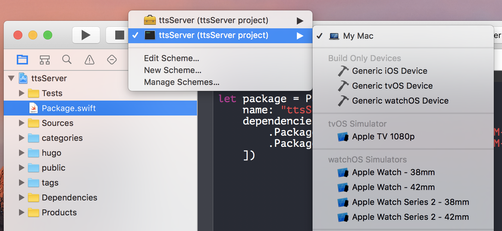

Hey guys! I haven’t written in a bit since I was exploring some cool technologies. In the past week, i’ve been hard at work learning about Kitura. In this blog, I will explain what I have learned, and help you get started learning Kitura and integrating your apps with Watson. Below is an iOS app that integrates text to speech and language translation services from watson. The source code to get started can be found here. If you want to check out the source code of the app I made in the video below you can find it here. I simply added a language translation service on top of the existing text to speech service.
Below is the site that I launched with Kitura.
The site shown above can be found at https://horeaporutiu.github.io/watsonSpeaks/
$ mkdir kituraProj
$ cd kituraProj
$ swift package init --type executable
Next we have to add dependencies and let Swift download all of the packages it needs to run the Kitura server. To do this, we have to add some lines in our Package.swift file.
import PackageDescription
let package = Package(
name: "myFirstProject",
dependencies: [
.Package(url: "https://github.com/IBM-Swift/Kitura.git", majorVersion: 1, minor: 7),
.Package(url: "https://github.com/IBM-Swift/HeliumLogger.git", majorVersion: 1, minor: 7)
])
import Kitura
// Create a new router
let router = Router()
// Handle HTTP GET requests to /
router.get("/") {
request, response, next in
response.send("Hello, World!")
next()
}
// Add an HTTP server and connect it to the router
Kitura.addHTTPServer(onPort: 8080, with: router)
// Start the Kitura runloop (this call never returns)
Kitura.run()
Compile the app.
$ swift build
Create an xcode app.
$ swift package generate-xcodeproj
Open the project in Xcode.
$ open kituraProj.xcodeproj
Change scheme to be as shown below. 
Run the project. Product -> Run. Allow incoming connections.
Open your browser at http://localhost:8080
To host simple static sites, you can simply add this line in your main.swift file. This will look for any files in the ‘public’ directory. Put all of your styling files such as CSS and HTML in that directory.
$ router.all("/", middleware: StaticFileServer())
Then create your public directory, add a simple index.html file in there, and add some code.
$ mkdir public
$ touch index.html
In the index file, add a basic skeleton. You can find one here: http://htmlshell.com/ Run the app again, Open your browser at http://localhost:8080 and your new site should be there!
To connect to watson, first clone a sample app.
$ git clone https://github.com/watson-developer-cloud/text-to-speech-swift.git
Follow the instructions https://github.com/watson-developer-cloud/text-to-speech-swift to get started. Once you have your app working, we want to have the server side code and the client side code different directories. One directory should be your kituraProj(server side), and the other is watsonApp.
To add Swift SDK frameworks, we first need to add the frameworks in our linked frameworks. Watch the video below to learn how to add the frameworks by going into our Carthage directory and opening the correct file. The last step in the video shows adding the “Run Scrip Phase” in the “Build Phases” section of our app.
Right under the “Run Script”, you will see Input Files. Click on the “+” icon, and add the following lines:
$(SRCROOT)/Carthage/Build/iOS/LanguageTranslatorV2.framework
For the last step, we simply need to open the plist.info file -> view as source code. Then add these lines from here.
We are ready to add the language translation code! Let’s do it!
Add this code to your view controller, and you are all set! Enjoy!
import LanguageTranslatorV2
let username = “your-username-here”
let password = “your-password-here”
let languageTranslator = LanguageTranslator(username: username, password: password)
// set the serviceURL property to use the legacy Language Translation service
// languageTranslator.serviceURL = “https://gateway.watsonplatform.net/language-translation/api"
let failure = { (error: Error) in print(error) }
languageTranslator.translate(“Hello”, from: “en”, to: “es”, failure: failure) {
translation in
print(translation)
}
Building an end-to-end app with Swift and Kitura has never been easier. Also, integrating with Watson is relatively easy if you follow these guidelines. Find out more about kitura here. Until next time!